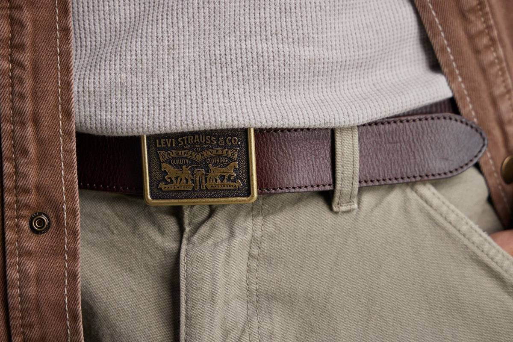
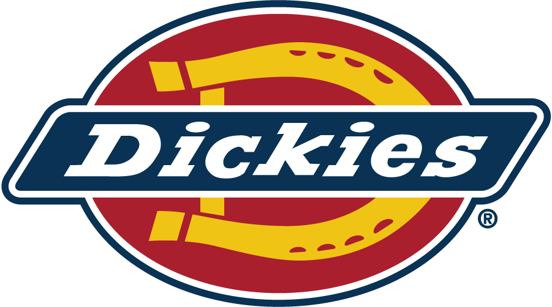
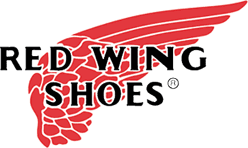
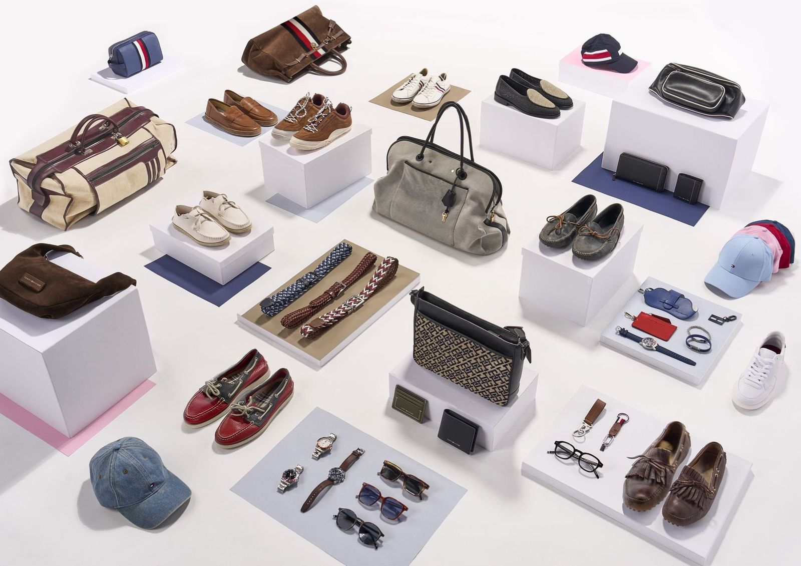
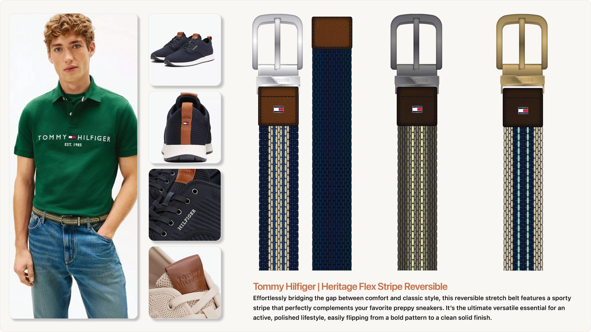
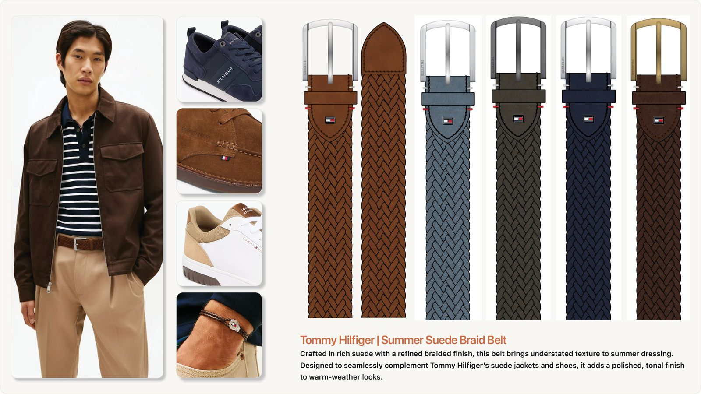
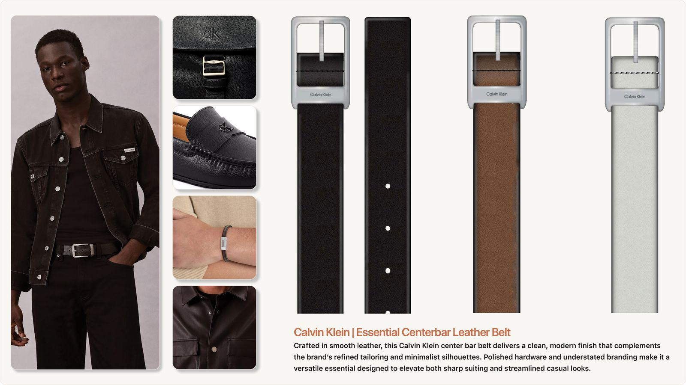
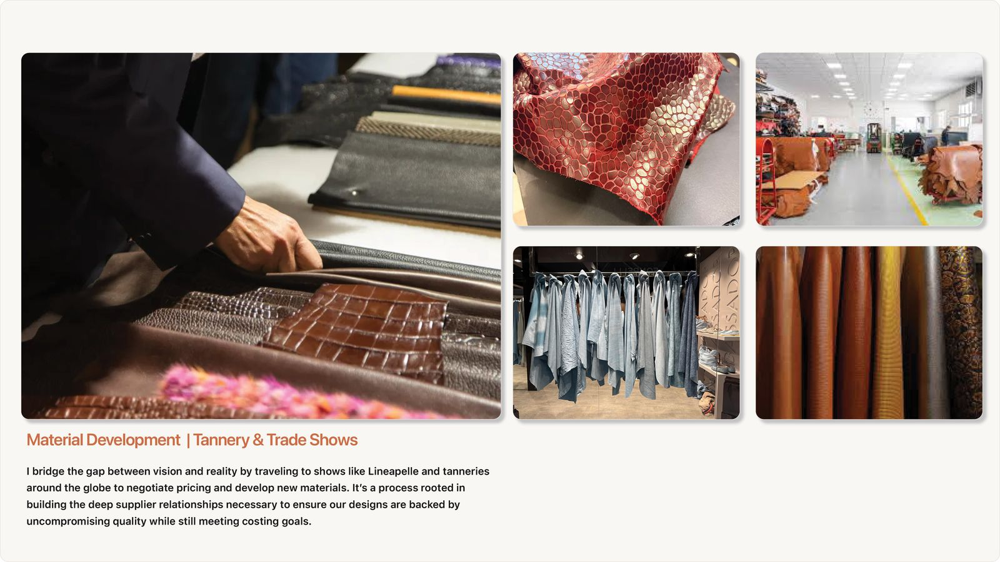
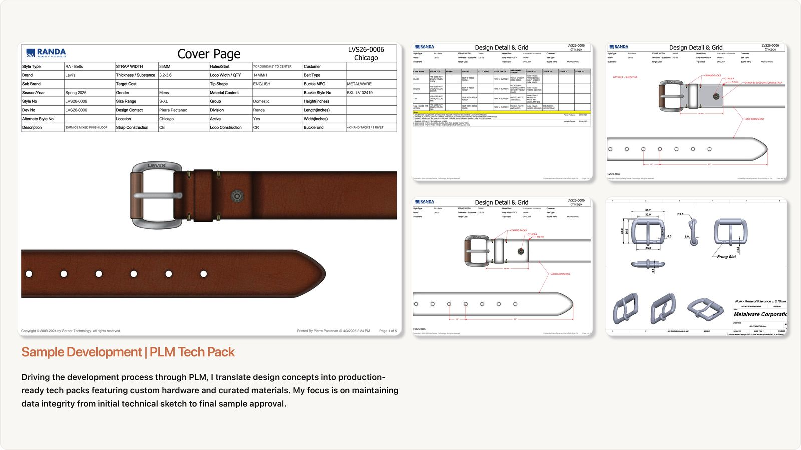

Directing a Licensed Portfolio of 11+ Brands
Helping lead the design team through every step of the season, and providing the creative direction for photoshoots and final buyer presentations, for all 11 licensed brands.

Role
Design Director and Senior Design Director
Team
Designers in US and overseas offices
Partners
Licensor brand teams, merchandising, sales
Brands






Eleven brands, one team
Eleven licensed brands, one design team, one calendar and a shared set of factories. Keeping each brand authentic and distinct inside that system was the job.
The job had two halves. I helped lead the design team through the whole product process: design, tech packs, samples and product review with the licensed brands. I also provided the creative direction for the season’s photoshoots and the final presentations to buyers at market.
Each season I directed design for all 11 brands in our portfolio, from Levi’s workwear Americana to Calvin Klein’s minimalism to Kenneth Cole’s sharper city look. Being authentic to each brand mattered more than anything. A Levi’s belt has to feel like Levi’s, and a Calvin Klein belt has to feel like Calvin Klein, no matter how many designers and factories touched them.
To get there, I combined each brand’s own trend direction with ours, so every collection reflected what was happening in the market and still spoke in the brand’s voice. I also made sure each brand had its own place in the market rather than blurring into the others. And every collection had to be approved by the licensor’s own brand team, people who know those brands better than anyone. The full trend process has its own case study: Setting Each Season’s Trend Direction.

Working with licensed brands also means aligning with other categories I don’t work on. The challenge is that by the end of the season, a brand has to come together as if it was done by one team.
The collection above is Tommy Hilfiger. It includes product from many different accessories categories, and it comes together in one seasonal look that is authentic to the brand.
Design development and review
Designers went to work taking the trend and designing a collection using sketches, Illustrator and, most recently, generative AI tools. I ran the reviews, giving feedback to designers in the US and overseas as the work came in, so each collection moved its brand forward and could still be made at the right cost.
Internal reviews happened behind the scenes, before anything went to the licensors for approval. Once the CADs were approved by each licensor, we moved on to tech packs and production.



Tech packs, samples and production
I worked with technical teams to turn designs into tech packs with precise specs, responsibly sourced materials and realistic factory timelines. Design, development and sourcing have to work closely here, or the design gets changed on the factory floor.
From there I helped lead the team through samples and product review with each licensed brand.


An idea that can’t be produced on the calendar and at the cost isn’t finished yet.
On design leadership
Photoshoots, lookbooks and market presentations
Alongside leading the design team, I was part of the creative direction for each season. Before market, I helped lead the photoshoots. Shoots were held on location or in the studio, and I helped with the creative direction and styling along with the women’s team director.
The images from the photoshoots were used in our New York showrooms, in management decks and in seasonal lookbooks that were printed and distributed to buyers. I also provided creative direction for the final presentations to buyers at market, so what they saw matched the work the design team had built.